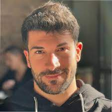

Dario Barocco
Full-Stack Web Developer
Summary
I believe that I would always be able to add value to the company I work for. My main goal is to grow and evolve professionally.
Education
- Mechanical Engineering
University of ZAP (Sep 2015 - Jul 2019)
Work experience
- PLC Programmer Technician
XYZAC, Spain (Sep 2019 - Feb 2020)
Completed tasks: NC PLC
programming; Technical support; Start up; Customer training.
- Consultant JDA TMS / WMS
ABC, Spain (Feb 2020 - Nov 2023)
Completed tasks: Supply Chain Consulting.
Skills
- HTML
- CSS
- Javascript
- Executive Skills

- Organizational Skills
Awards and Certifications
- Scholarship - University of ZAP (Jul 2019)
My Hobbies
Contact me